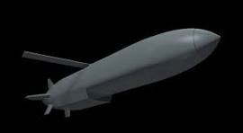

Systèmes temps réel avec forte exigence de fiabilité (Norme DO-178)
Développement de calculateurs internes de missiles "stand-off":
Storm Shadow et AASM:


Langage de programmation: C/C++. Utilisation de bancs de test temps réel pour l'intégration et la mise au point.